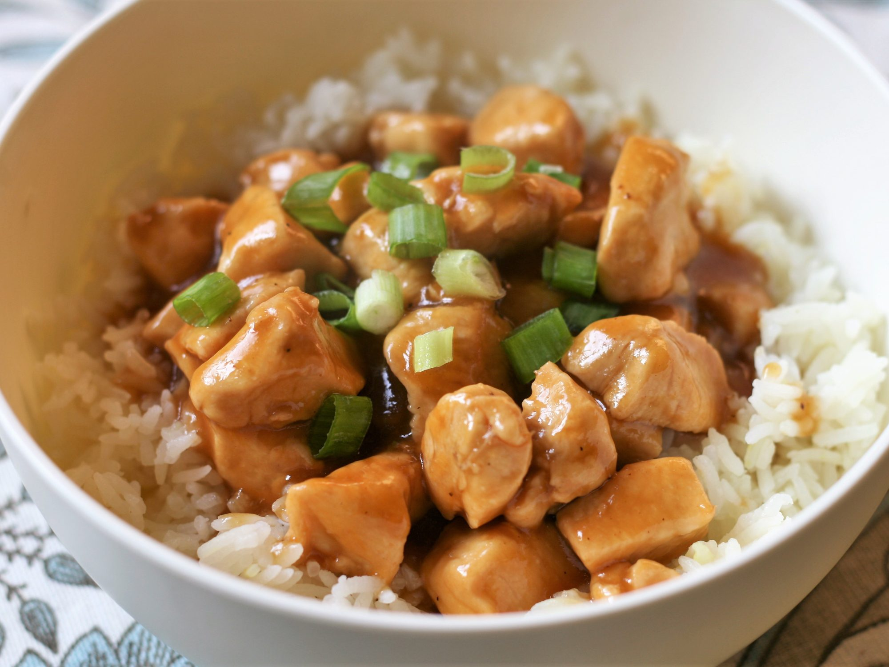

Whiskey Chicken

Description
A quick whiskey chicken that has so many uses, whether by itself, over rice, or in pasta.
A great dinner or lunch meal.
Again it's best to BBQ the chicken, and you can remove the garlic cloves if desired; they are only there to infuse flavor into the sauce.
Ingredients
- 2 pounds chicken thighs
- salt and ground black pepper to taste
- 1 ¼ cups pineapple juice
- 3 tablespoons bourbon whiskey, or more to taste
- 2 tablespoons soy sauce
- 3 cloves garlic
- 1 tablespoon brown sugar
- ¼ teaspoon ground black pepper
- 2 teaspoons butter, or to taste
- 2 large mushrooms, sliced
Steps
- Preheat an outdoor grill for high heat and lightly oil the grate.
- Season chicken thighs with salt and pepper.
- Cook the chicken thighs until no longer pink in the center and somewhat charred on the outside, about 7 minutes per side. An instant-read thermometer inserted into the center should read at least 165 degrees F (74 degrees C).
- Let chicken cool until able to handle easily, cut into strips, and put into a large glass bowl.
- Stir pineapple juice, bourbon whiskey, soy sauce, garlic cloves, brown sugar, and black pepper together in a saucepan over medium-low heat; stir until the sugar dissolves, bring to a simmer, and cook until thickened, 15 to 20 minutes.
- While the sauce simmers, melt the butter in a small skillet over medium-high heat. Saute mushrooms in hot butter until softened, 3 to 5 minutes. Stir into the simmering sauce.
- Pour the mushrooms and sauce over the chicken strips and toss to coat.
Back to Homepage